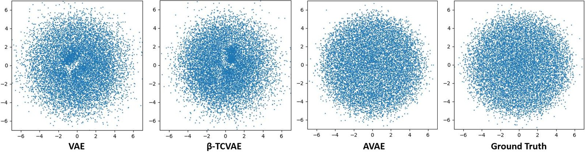
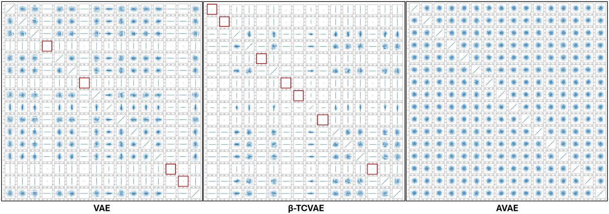
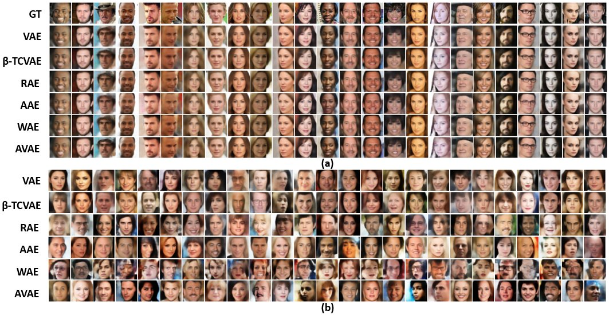

Matching Aggregate Posteriors in the Variational Autoencoder
In short: a standard VAE constrains each sample's posterior but not the overall (aggregate) distribution of latent codes, which leaves holes and collapsed axes. The Aggregate VAE (AVAE) matches the aggregate posterior to the prior directly, using a kernel density estimate with a bias-corrected bandwidth that works in latent spaces of more than 100 dimensions. The regularization weight is set automatically.

The problem
Sampling from a generative model means drawing from the prior and decoding. That only works if the codes the encoder actually produces cover the prior evenly. VAEs regularize each sample's conditional posterior, not the aggregate, so in practice they show two failure modes:
- Holes and clusters in the aggregate posterior, so prior samples land in regions the decoder never learned.
- Posterior collapse, where latent axes revert to the prior and carry no information, wasting capacity and hurting reconstruction.
Approach
- Aggregate posterior via KDE. The AVAE models the aggregate posterior with a kernel density estimate over encoder outputs and substitutes it into the ELBO. The objective is derived from first principles, with no extra regularization terms of the kind used by FactorVAE, β-TCVAE or InfoVAE.
- Bias-corrected bandwidth. An automated bandwidth estimator corrects the bias that normally makes KDE unreliable in high dimensions, which extends KDE-based matching to latent spaces with more than 100 dimensions.
- Automatic β. The weight on the regularization term is updated during training from the validation reconstruction error, so it doesn't need to be tuned by cross-validation.
- Builds on GENs. The AVAE extends the KDE-based distribution matching of Generative Encoding Networks (Machine Learning, 2022), which was limited to low-dimensional latent spaces.

Results
Each method is trained five times with different seeds; the tables report means.
Generative quality
| Method | MNIST FID ↓ | Recall ↑ | CelebA FID ↓ | Recall ↑ | CIFAR-10 FID ↓ | Recall ↑ |
|---|---|---|---|---|---|---|
| VAE | 28.78 | 0.97 | 49.89 | 0.75 | 147.74 | 0.47 |
| β-TCVAE | 50.62 | 0.95 | 50.14 | 0.70 | 180.94 | 0.41 |
| RAE | 18.79 | 0.95 | 48.81 | 0.77 | 94.34 | 0.47 |
| AAE | 19.51 | 0.96 | 49.32 | 0.75 | 100.00 | 0.56 |
| WAE | 25.42 | 0.92 | 72.01 | 0.75 | 140.49 | 0.31 |
| AVAE | 13.27 | 0.98 | 46.00 | 0.85 | 90.93 | 0.67 |
How Gaussian is the latent space?
Entropy of the whitened latent codes measures how closely they match a standard normal; higher means fewer holes and clusters.
| Method | MNIST (l=16) | CelebA (l=64) | CIFAR-10 (l=128) |
|---|---|---|---|
| VAE | 4.71 | 28.88 | 29.56 |
| AAE | 5.81 | 30.49 | 54.21 |
| WAE | 4.67 | 28.32 | 48.10 |
| AVAE | 7.56 | 30.96 | 55.64 |
| Standard normal (reference) | 8.00 | 32.00 | 64.00 |
Selected baselines shown; full tables, including reconstruction error and ablations, are in the paper.

Citation
@inproceedings{saha2024avae,
title = {Matching Aggregate Posteriors in the Variational Autoencoder},
author = {Saha, Surojit and Joshi, Sarang and Whitaker, Ross},
booktitle = {International Conference on Pattern Recognition (ICPR)},
pages = {428--444},
year = {2024},
doi = {10.1007/978-3-031-78172-8_28}
}